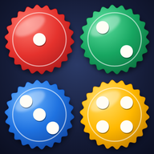

Privacy
Tock · gioco da tavolo a coppie · aggiornata a ottobre 2026
In breve
Tock non chiede email, numero di telefono o account. Non mostra pubblicità, non ti traccia e non vende né cede i tuoi dati a nessuno. Servono solo il nome che scegli tu e i dati della partita.
Quali dati usiamo
- Il nome che scrivi (anche un soprannome): lo vedono gli altri giocatori al tavolo e compare nella classifica.
- I dati della partita: stanza, colore, carte, mosse, messaggi della chat della stanza, vittorie e partite giocate (per la classifica).
- Lo stato "collegato" e la versione dell'app, per mostrare agli altri chi è online.
- Contatori anonimi (per esempio quante partite si giocano in totale), senza nomi.
Sul tuo telefono restano alcune preferenze (tema, suoni, lezioni fatte, il nome usato l'ultima volta). Non escono dal telefono.
Dove sono conservati
Le partite passano da Firebase Realtime Database di Google, con i server in Europa (Belgio). Google tratta questi dati per nostro conto, secondo le proprie regole sulla protezione dei dati.
Per quanto tempo
Le stanze di gioco restano finché non vengono riusate per nuove partite. Il nome e la classifica restano finché non chiedi di cancellarli.
Giocare con sconosciuti
Con "Gioca subito" l'app ti mette al tavolo con altri giocatori disponibili. In queste partite la chat usa solo frasi già pronte ed emoji: non si possono scrivere messaggi liberi. Non usare il tuo nome e cognome veri se preferisci restare anonimo.
I tuoi diritti e i contatti
Puoi chiedere in qualsiasi momento di vedere, correggere o cancellare il tuo nome, le tue partite e la tua riga in classifica. Scrivi a [EMAIL DI CONTATTO] indicando il nome usato nell'app.
Responsabile dell'app: Mig (sviluppatore di Tock).
Bambini
L'app non chiede dati che identificano una persona e non è pensata in modo particolare per i bambini sotto i 13 anni.
English summary
Tock needs no account, email or phone number, shows no ads and does not track you or sell data. It only uses the nickname you choose and game data (rooms, moves, room chat, wins for the leaderboard), stored on Google Firebase Realtime Database (EU servers). Games with strangers ("Gioca subito") only allow preset chat phrases. To view or delete your data, write to [EMAIL DI CONTATTO] with the nickname you used.